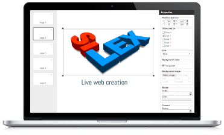

<!DOCTYPE html><html><head>
	<title>Silex, free website builder, online html editor</title>
	<meta charset="UTF-8">
	<meta name="generator" content="Silex v2.0"> <!-- leave this for stats -->
	<script type="text/javascript" src="http://static.silex.me/2.1/jquery.js"></script>
	<script type="text/javascript" src="http://static.silex.me/2.1/jquery-ui.js"></script>
	<script type="text/javascript" src="http://static.silex.me/2.1/jquery.ui.touch-punch.min.js"></script>
	<script type="text/javascript" src="http://static.silex.me/2.1/pageable.js"></script>
	<script type="text/javascript" src="http://static.silex.me/2.1/front-end.js"></script>
	<!-- Silex style -->
	<link href="http://static.silex.me/2.1/front-end.css" rel="stylesheet">
	<!-- Normalize -->
	<link href="http://static.silex.me/2.1/normalize.css" rel="stylesheet">
	<style type="text/css" class="silex-style">
@import url('http://fonts.googleapis.com/css?family=Abel');
@import url('http://fonts.googleapis.com/css?family=Oswald:400,300');

.oswald.text-element, .oswald .text-element {
    font-family: 'Oswald', sans-serif;
}

.abel.text-element, .abel .text-element {
    font-family: 'Abel', sans-serif;
}
.links a{
    color:#006CB2;
}

/* text styles formatting */
.text-element HEADER,
.text-element H1,
.text-element H2,
.text-element H3,
.text-element DIV,
.text-element P,
.text-element QUOTE {
  color: #FF3200;

}
.text-element HEADER {
  font-size: 45px;
}
/* background element */
.background{

}
.text-element.very-big *{
    font-size: 80px !important;
}
.text-shadow{
    text-shadow: -1px 2px #ff0000;
}
.full-width{
    width:100% !important;
}
.centered{
   margin: auto !important;
   position: relative !important;
}
.top{
    z-index: 100;
}
.silex-runtime .fixed-menu{
    position: fixed !important;
    z-index: 120;
}
/* *************************** *
.layout-h div{
    position: static !important;
    display: inline-block !important;
}

.animated.paged-element-hidden{
    display: inherit !important;
    position: absolute !important;
    left: -5000px !important;
    opacity: 0 !important;
}
.animated.paged-element{
    transition: left 0.8s !important;
}
/* *************************** */
.call-to-action-button div{
    overflow: hidden !important;
}
.call-to-action-button{
  -moz-box-shadow:inset 0px 1px 10px 0px #FF55AAEE;
  -webkit-box-shadow:inset 0px 1px 10px 0px #FF55AAEE;
  box-shadow:inset 0px 1px 10px 0px #FF55AAEE;

/* SVG fallback(Opera 11.10-, IE9) */
background: url('');

/* Opera 11.10+ */
background: -o-linear-gradient(top, rgba(0,51,102,1), rgba(85,170,238,1));

/* Firefox 3.6+ */
background: -moz-linear-gradient(top, rgba(0,51,102,1), rgba(85,170,238,1));

/* Chrome 7+ & Safari 5.03+ */
background: -webkit-gradient(linear, left top, left bottom, color-stop(0, rgba(0,51,102,1)), color-stop(1, rgba(85,170,238,1)));

/* Newer Browsers */
background: linear-gradient(top, rgba(0,51,102,1), rgba(85,170,238,1));

/* IE5.5 - IE7 */
filter: progid:DXImageTransform.Microsoft.Gradient(GradientType=0,StartColorStr=#FF003366,EndColorStr=#FF55AAEE);

/* IE8 */
-ms-filter: "progid:DXImageTransform.Microsoft.Gradient(GradientType=0,StartColorStr=#FF003366,EndColorStr=#FF55AAEE)";

  background-color:#FF003366;
  -webkit-border-top-left-radius:23px;
  -moz-border-radius-topleft:23px;
  border-top-left-radius:23px;
  -webkit-border-top-right-radius:0px;
  -moz-border-radius-topright:0px;
  border-top-right-radius:0px;
  -webkit-border-bottom-right-radius:23px;
  -moz-border-radius-bottomright:23px;
  border-bottom-right-radius:23px;
  -webkit-border-bottom-left-radius:0px;
  -moz-border-radius-bottomleft:0px;
  border-bottom-left-radius:0px;
  text-indent:0;
  border:1px solid #FF55AAEE;
  display:inline-block;
  color:#306108;
  font-family:Arial;
  font-size:15px;
  font-weight:bold;
  font-style:normal;
  height:50px;
  line-height:50px;
  width:147px;
  text-decoration:none;
  text-align:center;
  text-shadow:1px 1px 0px #FF55AAEE;
}
.classname:hover {
  background:gradient( linear, left top, left bottom, color-stop(0.05, #5cb811), color-stop(1, #77d42a) );
  background:-webkit-gradient( linear, left top, left bottom, color-stop(0.05, #5cb811), color-stop(1, #77d42a) );
  background:-moz-linear-gradient( center top, #5cb811 5%, #77d42a 100% );
  filter:progid:DXImageTransform.Microsoft.gradient(startColorstr='#5cb811', endColorstr='#77d42a');
  background-color:#5cb811;
}.classname:active {
  position:relative;
  top:1px;
}
</style>


<script type="text/javascript" class="silex-script">////////////////////////////////////
// anchors and scrolling
$(function(){
    var offset = 40;
    newAnchorLink('home', 0);
    newAnchorLink('showcase', 665-offset);
    newAnchorLink('silex', 890-offset);
    newAnchorLink('links', 585-offset);
    newAnchorLink('contact', 135+2710);
});
function newAnchorLink(link, pos){
    $('a[href="http://#'+link+'"]').click(function(){
        $('html, body').animate({
            scrollTop: pos
        }, 500);
        return false;
    });
}
////////////////////////////////////
// google analytics
(function(i,s,o,g,r,a,m){i['GoogleAnalyticsObject']=r;i[r]=i[r]||function(){
(i[r].q=i[r].q||[]).push(arguments)},i[r].l=1*new Date();a=s.createElement(o),
m=s.getElementsByTagName(o)[0];a.async=1;a.src=g;m.parentNode.insertBefore(a,m)
})(window,document,'script','http://www.google-analytics.com/analytics.js','ga');

ga('create', 'UA-19608894-18', 'silex.me');
ga('send', 'pageview');
////////////////////////////////////
// fade in for images
$(function(){
    //$("img").css('opacity', '0');
    $("img").hide().bind("load", function () { 
        $(this).fadeIn(); 
    });
});
////////////////////////////////////
</script><meta name="publicationPath" content="/api/v1.0/dropbox/exec/put/fdt-workspace/Silex/www"></head><body style="background-color: rgb(0, 74, 122);" class="silex-runtime">
	<a id="silex" data-silex-type="page" class="page-element">Silex</a>

<div class="background editable-style container-element" data-silex-type="container" style="background-color: rgb(255, 255, 255); width: 960px; height: 1885px; position: absolute; top: 0px; left: 0.5px; box-shadow: rgba(0, 0, 0, 0.498039) 1px 0px 10px 0px; border-top-left-radius: 0px; border-top-right-radius: 0px; border-bottom-right-radius: 0px; border-bottom-left-radius: 0px;">
	<div data-silex-type="text" class="editable-style text-element paged-element oswald silex" style="position: absolute; height: 80px; width: 294px; top: 1075px; left: 20px; background-color: transparent;"><div class="silex-element-content" style="width: 100%; height: 100%;"><p style="text-align: center;"><font color="#444444" size="5">FREE, BUT FREE HOW ?</font></p></div></div><div data-silex-type="text" class="editable-style text-element paged-element oswald silex" style="position: absolute; height: 80px; width: 294px; top: 1075px; left: 333px; background-color: transparent;"><div class="silex-element-content" style="width: 100%; height: 100%;"><p style="text-align: center;"><font color="#444444" size="5">GETTING STARTED</font></p></div></div><div data-silex-type="text" class="editable-style text-element paged-element oswald silex" style="position: absolute; height: 80px; width: 294px; top: 1300px; left: 20px; background-color: transparent;"><div class="silex-element-content" style="width: 100%; height: 100%;"><p style="text-align: center;"><font color="#444444" size="5">HOSTING YOUR SITE</font></p></div></div><div data-silex-type="text" class="editable-style text-element paged-element silex abel links" style="position: absolute; height: 200px; width: 294px; top: 1120px; left: 20px; background-color: transparent;"><div class="silex-element-content" style="width: 100%; height: 100%;"><p><font color="#444444">Silex is <a href="http://en.wikipedia.org/wiki/Free_and_open-source_software">free&nbsp;/ libre</a> because we believe that free minds need to have free tools, &nbsp;without hidden costs or licensing hassle.</font></p><p><font color="#444444">Remember, we made it for us first, and you are welcome to <a href="http://www.silexlabs.org/exchange-platform/how-to-contribute/">contribute</a> &nbsp;and to <a href="http://#contact">propose services to the community</a>.</font></p></div></div><div data-silex-type="text" class="editable-style text-element paged-element oswald silex" style="position: absolute; height: 80px; width: 294px; top: 1300px; left: 333px; background-color: transparent;"><div class="silex-element-content" style="width: 100%; height: 100%;"><p style="text-align: center;"><font color="#444444" size="5">SEARCH ENGINES</font></p></div></div><div data-silex-type="text" class="editable-style text-element paged-element silex abel links" style="position: absolute; height: 180px; width: 294px; top: 1345px; left: 333px; background-color: transparent;"><div class="silex-element-content" style="width: 100%; height: 100%;"><p><font color="#444444">The websites created on silex.me are search engine friendly, and Silex has all the options you need to optimize it for search engines.</font></p></div></div><div data-silex-type="text" class="editable-style text-element paged-element oswald silex" style="position: absolute; height: 80px; width: 294px; top: 1300px; left: 645px; background-color: transparent;"><div class="silex-element-content" style="width: 100%; height: 100%;"><p style="text-align: center;"><font size="5">GET INVOLVED ?</font></p></div></div><div data-silex-type="container" class="editable-style container-element paged-element silex" style="position: absolute; height: 14px; width: 920px; top: 1500px; left: 20px; background-color: transparent; border-width: 1px 0px 0px; border-style: solid; border-color: rgb(0, 155, 255);"></div><div data-silex-type="text" class="editable-style text-element paged-element oswald silex" style="position: absolute; height: 80px; width: 294px; top: 1500px; left: 20px; background-color: transparent;"><div class="silex-element-content" style="width: 100%; height: 100%;"><p style="text-align: center;"><font color="#444444" size="5">SILEX WIDGETS</font></p></div></div><div data-silex-type="text" class="editable-style text-element paged-element silex abel links" style="position: absolute; height: 200px; width: 294px; top: 1545px; left: 20px; background-color: transparent;"><div class="silex-element-content" style="width: 100%; height: 100%;"><p><font color="#444444">Take a look at <a href="https://github.com/silexlabs/Silex/issues?labels=widget&amp;state=open">the community widgets</a> provided for free with Silex.&nbsp;</font></p><p><span style="color: rgb(68, 68, 68);">Silex was initially made for&nbsp;</span><a href="http:/#showcase">showcase websites</a><span style="color: rgb(68, 68, 68);">, and it can be extended to add online payment, multimedia/audio/video capabilities, online forms, forums or blog integration, etc.&nbsp;</span></p></div></div><div data-silex-type="text" class="editable-style text-element paged-element oswald silex" style="position: absolute; width: 294px; top: 1500px; left: 645px; background-color: transparent; height: 80px;"><div class="silex-element-content" style="width: 100%; height: 100%;"><p style="text-align: center;"><font size="5">CODER FRIENDLY</font></p></div></div><div data-silex-type="container" class="editable-style container-element paged-element silex" style="position: absolute; height: 100px; width: 960px; top: 1725px; left: 0px; background-color: rgb(0, 155, 255);"><div data-silex-type="container" class="editable-style container-element paged-element-hidden" style="position: absolute; width: 960px; top: 0px; left: 0px; background-color: rgb(0, 60, 100); height: 160px; border-radius: 0px;"><div class="editable-style image-element" data-silex-type="image" style="position: absolute; height: 70px; width: 70px; top: 25px; left: 500px;" data-silex-href="http://www.facebook.com/silexlabs "></div><div class="editable-style image-element" data-silex-type="image" style="position: absolute; height: 70px; width: 70px; top: 25px; left: 410px;" data-silex-href="https://twitter.com/silexlabs"></div><div class="editable-style image-element" data-silex-type="image" style="position: absolute; height: 70px; width: 70px; top: 25px; left: 320px;" data-silex-href="http://www.silexlabs.org/category/the-blog/blog-silex"></div><div class="editable-style image-element" data-silex-type="image" style="position: absolute; height: 70px; width: 70px; top: 24px; left: 590px;" data-silex-href="https://plus.google.com/communities/107373636457908189681"></div><div class="editable-style image-element" data-silex-type="image" style="position: absolute; height: 70px; width: 70px; top: 23px; left: 680px;" data-silex-href="http://www.youtube.com/user/Silexlabs"></div><div class="editable-style image-element" data-silex-type="image" style="position: absolute; height: 79px; width: 265px; top: 20px; left: 20px;" data-silex-href="http://www.silexlabs.org/"></div><div data-silex-type="text" class="editable-style text-element abel" style="position: absolute; width: 920px; top: 110px; left: 20px; background-color: transparent; height: 55px;"><div class="silex-element-content" style="width: 100%; height: 100%;"><p style="text-align: center;"><font color="#ffffff" size="2">Copyright © <a href="http://www.silexlabs.org/">Silex Labs</a> &nbsp; &nbsp; - &nbsp; &nbsp;&nbsp;</font><span style="color: rgb(255, 255, 255); font-size: small;">Design © <a href="http://www.linkedin.com/pub/pol-goasdou%C3%A9/19/87b/616">Pol Goasdoué</a></span><span style="color: rgb(255, 255, 255); font-size: small;">&nbsp; &nbsp; - &nbsp; &nbsp;Powered by <a href="http://www.silex.me">Silex</a></span></p></div></div><div class="editable-style image-element" data-silex-type="image" style="position: absolute; height: 70px; width: 70px; top: 23px; left: 770px;" data-silex-href="http://eepurl.com/F48q5"></div><div class="editable-style image-element" data-silex-type="image" style="position: absolute; height: 70px; width: 70px; top: 23px; left: 860px;" data-silex-href="https://github.com/silexlabs/Silex/issues?labels=help+wanted&amp;state=open"></div></div></div><div data-silex-type="text" class="editable-style text-element paged-element oswald silex" style="position: absolute; height: 80px; width: 294px; top: 1075px; left: 646px; background-color: transparent;"><div class="silex-element-content" style="width: 100%; height: 100%;"><p style="text-align: center;"><font color="#444444" size="5">SILEX AND YOUR DATA</font></p></div></div><div data-silex-type="text" class="editable-style text-element paged-element silex oswald very-big" style="position: absolute; top: 872px; left: 0px; background-color: transparent; height: 124px; width: 960px;"><div class="silex-element-content" style="width: 100%; height: 100%;"><div style="text-align: center;"><span style="font-size: -webkit-xxx-large;">WHAT IS SILEX ?</span></div></div></div><div data-silex-type="text" class="editable-style text-element paged-element silex abel links" style="position: absolute; height: 200px; width: 294px; top: 1545px; left: 644px; background-color: transparent;"><div class="silex-element-content" style="width: 100%; height: 100%;"><p><font color="#444444">Silex is powered by HTML/Javascript/CSS. One can write code in from within Silex, and enhance websites with limitless functionalities. Also Silex can handle any HTML widget, which is useful to embed videos, forms, slideshows, etc.</font></p></div></div><div data-silex-type="text" class="editable-style text-element paged-element silex abel links" style="position: absolute; height: 148px; width: 294px; top: 1120px; left: 333px; background-color: transparent;"><div class="silex-element-content" style="width: 100%; height: 100%;"><p><font color="#000000">It takes a few hours to be up and running with Silex’s basic features, which allows you to produce a simple site or a prototype</font>.&nbsp;</p></div></div><div data-silex-type="container" class="editable-style container-element paged-element silex" style="position: absolute; height: 10px; width: 920px; top: 1300px; left: 20px; background-color: rgb(255, 255, 255); border-width: 1px 0px 0px; border-style: solid; border-color: rgb(0, 155, 255);"></div><div data-silex-type="container" class="editable-style container-element paged-element silex" style="position: absolute; height: 10px; width: 920px; left: 20px; background-color: transparent; border-width: 1px 0px 0px; border-style: solid; border-color: rgb(0, 155, 255); top: 1075px;"></div><div data-silex-type="container" class="editable-style container-element paged-element silex" style="position: absolute; height: 210px; width: 960px; top: 670px; left: 0px; background-color: rgb(0, 155, 255);"><div class="editable-style image-element" data-silex-type="image" style="position: absolute; height: 190px; width: 315px; top: 14px; left: 5px;" data-silex-href="http://www.loeufalacoque.com/"></div><div class="editable-style image-element" data-silex-type="image" style="position: absolute; height: 190px; width: 315px; top: 14px; left: 322px;" data-silex-href="http://www.filmenforme.com"></div><div class="editable-style image-element" data-silex-type="image" style="position: absolute; height: 190px; width: 315px; top: 14px; left: 640px;" data-silex-href="http://leofrancia.fr/"></div></div><div data-silex-type="container" class="editable-style container-element paged-element silex full-width fixed-menu" style="position: absolute; left: 0px; background-color: rgb(0, 155, 255); height: 42px; box-shadow: 0px 1px 3px black; top: -5px;"><div data-silex-type="container" class="editable-style container-element centered abel" style="height: 50px; top: -5px; width: 926px; background-color: transparent; position: absolute; left: 0px;"><div data-silex-type="text" class="editable-style text-element paged-element-hidden" style="height: 70px; width: 163px; left: 769px; background-color: transparent; position: absolute; top: 0px;"><div class="silex-element-content" style="width: 100%; height: 100%;"><p style="text-align: center;"><font color="#ffff00" size="4"><a href="http://www.silex.me/silex/">Create your site</a></font></p></div></div><div data-silex-type="text" class="editable-style text-element paged-element-hidden" style="height: 70px; width: 140px; left: 616px; background-color: transparent; top: 0px; position: absolute;"><div class="silex-element-content" style="width: 100%; height: 100%;"><p style="text-align: center;"><font color="#ffffff" size="4"><a href="http://#contact">Get in touch</a></font></p></div></div><div data-silex-type="text" class="editable-style text-element paged-element-hidden" style="height: 70px; width: 140px; left: 124px; background-color: transparent; top: 0px; position: relative;"><div class="silex-element-content" style="width: 100%; height: 100%;"><p style="text-align: center;"><font color="#ffffff" size="4"><a href="http://#links">Links</a></font></p></div></div><div data-silex-type="text" class="editable-style text-element" style="height: 78px; width: 159px; background-color: transparent; top: 0px; position: absolute; left: 452px;"><div class="silex-element-content" style="width: 100%; height: 100%;"><p style="text-align: center;"><font color="#ffffff" size="4"><a href="http://#silex">What is Silex ?</a></font></p></div></div><div data-silex-type="text" class="editable-style text-element" style="height: 70px; width: 140px; background-color: transparent; top: 0px; position: absolute; left: -20px;"><div class="silex-element-content" style="width: 100%; height: 100%;"><p style="text-align: center;"><font color="#ffffff" size="4"><a href="http://#home">Home</a></font></p></div></div><div data-silex-type="text" class="editable-style text-element paged-element-hidden" style="height: 70px; width: 140px; left: 278px; background-color: transparent; top: 0px; position: absolute;"><div class="silex-element-content" style="width: 100%; height: 100%;"><p style="text-align: center;"><font color="#ffffff" size="4"><a href="http://#showcase"><span id="goog_1083468094"></span><span id="goog_1083468095"></span>Silex sites</a></font></p></div></div></div></div><div class="editable-style image-element fadeIn" data-silex-type="image" style="position: absolute; height: 224px; width: 371px; top: 80px; left: 29px;"></div><div class="editable-style image-element silex paged-element fadeIn fadeIn-5" data-silex-type="image" style="position: absolute; height: 383px; width: 313px; top: 50px; left: 400px;"></div><div data-silex-type="container" class="editable-style container-element paged-element silex fadeIn" style="position: absolute; height: 290px; width: 960px; top: 290px; left: 0px; background-color: transparent; background-image: url('assets/nuages-01.png'); background-position: 0% 100%; background-repeat: no-repeat no-repeat;"><div class="editable-style image-element" data-silex-type="image" style="position: absolute; height: 254px; width: 960px; top: 37px; left: 2px; background-position: 0% 0%;"></div></div><div style="height: 30px; width: 92px; top: 632px; left: 15px; position: absolute; background-color: transparent;" class="editable-style text-element silex paged-element abel" data-silex-type="text" data-silex-href="https://github.com/silexlabs/Silex"><div class="silex-element-content" style="width: 100%; height: 100%;"><div style="text-align: center;"><span style="color: rgb(11, 83, 148);">Source code<br></span></div></div></div><div style="height: 30px; width: 98px; top: 632px; left: 265px; position: absolute; background-color: transparent;" class="editable-style text-element silex paged-element abel" data-silex-type="text" data-silex-href="https://github.com/silexlabs/Silex/issues?labels=bug&amp;state=open"><div class="silex-element-content" style="width: 100%; height: 100%;"><div style="text-align: center;"><span style="color: rgb(11, 83, 148);">Bug report<br></span></div></div></div><div style="height: 30px; width: 132px; top: 632px; left: 376px; position: absolute; background-color: transparent;" class="editable-style text-element silex paged-element abel" data-silex-type="text" data-silex-href="https://github.com/silexlabs/Silex/blob/master/docs/change-log.md"><div class="silex-element-content" style="width: 100%; height: 100%;"><div style="text-align: center;"><span style="color: rgb(11, 83, 148);">software updates</span></div></div></div><div style="height: 30px; width: 119px; top: 632px; left: 511px; position: absolute; background-color: transparent;" class="editable-style text-element silex paged-element abel" data-silex-type="text" data-silex-href="https://github.com/silexlabs/Silex/blob/master/docs/contributors.md"><div class="silex-element-content" style="width: 100%; height: 100%;"><div style="text-align: center;"><span style="color: rgb(11, 83, 148);">Hire our experts<br></span></div></div></div><div data-silex-type="text" class="editable-style text-element paged-element silex abel links" style="position: absolute; height: 180px; width: 294px; top: 1120px; left: 645px; background-color: transparent;"><div class="silex-element-content" style="width: 100%; height: 100%;"><p><font color="#444444">While editing your site on <a href="http://www.silex.me/">silex.me</a> your files are on your hard drive, available to Silex through Dropbox</font></p><p><font color="#444444">After you press the "publish" button, your site is pushed online and <a href="https://www.dropbox.com">Dropbox</a> is not used anymore.</font></p></div></div><div style="height: 120px; width: 960px; top: 980px; left: -1px; position: absolute; background-color: transparent;" class="editable-style text-element silex paged-element abel" data-silex-type="text"><div class="silex-element-content" style="width: 100%; height: 100%;"><div style="text-align: center;"><font size="5"><span style="color: rgb(68, 68, 68);">Silex lets you create websites by yourself.<br><a href="https://github.com/silexlabs/Silex">Silex is free and open-source.</a><br>Silex has an intuitive interface, so you can focus on what matters : design.<br></span></font></div></div></div><div data-silex-type="text" class="editable-style text-element paged-element silex abel links" style="position: absolute; height: 160px; width: 294px; top: 1344px; left: 19px; background-color: transparent;"><div class="silex-element-content" style="width: 100%; height: 100%;"><p><font color="#444444">Your work on <a href="http://www.silex.me">silex.me</a> will result in an HTML page stored on your computer.</font></p><p><font color="#444444">Let Silex publish your site online with one click, or <a href="http://en.wikipedia.org/wiki/Web_hosting_service">host it</a> anywhere, with the hosting company of your choice.</font></p></div></div><div data-silex-type="text" class="editable-style text-element paged-element silex abel links" style="position: absolute; height: 180px; width: 294px; top: 1345px; left: 646px; background-color: transparent;"><div class="silex-element-content" style="width: 100%; height: 100%;"><p><font color="#444444">Let us know about <a href="https://github.com/silexlabs/Silex/issues?labels=question&amp;state=open">troubleshooting, questions, suggestions</a>, etc.&nbsp;</font></p><p><span style="color: rgb(68, 68, 68);">And if you want to be even more useful, here is a list of </span><a href="https://github.com/silexlabs/Silex/issues?labels=help+wanted&amp;state=open">simple things you can do for your favorite website builder</a><span style="color: rgb(68, 68, 68);"> ;)</span></p></div></div><div data-silex-type="text" class="editable-style text-element paged-element oswald silex" style="position: absolute; height: 80px; width: 294px; top: 1500px; left: 331px; background-color: transparent;"><div class="silex-element-content" style="width: 100%; height: 100%;"><p style="text-align: center;"><font color="#444444" size="5">SILEX TEMPLATES</font></p></div></div><div data-silex-type="text" class="editable-style text-element abel" style="position: absolute; height: 55px; width: 212px; top: 203px; left: 720px; background-color: transparent;"><div class="silex-element-content" style="width: 100%; height: 100%;"><p style="text-align: center;">Use it online with</p></div></div><div class="editable-style image-element" data-silex-type="image" style="position: absolute; height: 29px; width: 102px; top: 246px; left: 770px;" data-silex-href="http://www.dropbox.com"></div><div data-silex-type="text" class="editable-style text-element paged-element silex abel links" style="position: absolute; height: 200px; width: 294px; top: 1546px; left: 333px; background-color: transparent;"><div class="silex-element-content" style="width: 100%; height: 100%;"><p><font color="#444444">The <a href="http://www.silexlabs.org/silex/">community</a> has produce <a href="https://github.com/silexlabs/Silex/issues?labels=template&amp;state=open">templates for you to get started quickly</a>, but you are free to start with a blank page !</font></p></div></div><div class="editable-style html-element fadeIn fadeIn-5" data-silex-type="html" style="position: absolute; height: 65px; width: 175px; top: 589px; left: 781px; background-color: transparent; background-position: 0% 0%;"><div class="silex-element-content" style="width: 100%; height: 100%;"><script type="text/javascript" src="http://w.sharethis.com/button/buttons.js"></script>
<script type="text/javascript">stLight.options({publisher: "92d4d892-d35d-40d9-9e8f-0ccfd70d0c30", doNotHash: false, doNotCopy: false, hashAddressBar: false});</script>
<br>
<span class="st_facebook_large" displaytext="Facebook"></span>
<span class="st_twitter_large" displaytext="Tweet"></span>
<span class="st_googleplus_large" displaytext="Google +"></span>
<span class="st_linkedin_large" displaytext="LinkedIn"></span></div></div><div data-silex-type="text" class="editable-style text-element silex paged-element abel" style="position: absolute; height: 50px; width: 212px; top: 90px; left: 720px; background-color: transparent;"><div class="silex-element-content" style="width: 100%; height: 100%;"><div style="text-align: center;"><font size="6">Create your site</font></div></div></div><div data-silex-type="text" class="editable-style text-element silex paged-element abel" style="position: absolute; height: 31px; width: 115px; top: 632px; left: 636px; background-color: transparent;" data-silex-href="https://github.com/silexlabs/Silex/issues?labels=question"><div class="silex-element-content" style="width: 100%; height: 100%;"><div style="text-align: center;"><font color="#0b5394">Your Questions</font></div></div></div><div style="height: 30px; width: 97px; top: 632px; left: 140px; position: absolute; background-color: transparent;" class="editable-style text-element silex paged-element abel" data-silex-type="text" data-silex-href="https://github.com/silexlabs/Silex/blob/master/docs/contribute.md"><div class="silex-element-content" style="width: 100%; height: 100%;"><div style="text-align: center;"><span style="color: rgb(11, 83, 148);">Contribute</span></div></div></div><div class="editable-style image-element silex paged-element" data-silex-type="image" style="position: absolute; height: 85px; width: 212px; top: 135px; left: 720px;" data-silex-href="http://www.silex.me/silex/"></div><div class="editable-style image-element silex paged-element fadeIn fadeIn-5" data-silex-type="image" style="position: absolute; height: 30px; width: 52px; top: 597px; left: 416px;" data-silex-href="https://github.com/silexlabs/Silex/blob/master/docs/change-log.md"></div><div class="editable-style image-element silex paged-element fadeIn fadeIn-5" data-silex-type="image" style="position: absolute; height: 47px; width: 47px; top: 586px; left: 165px;" data-silex-href="https://github.com/silexlabs/Silex/blob/master/docs/contribute.md"></div><div class="editable-style image-element silex paged-element fadeIn fadeIn-5" data-silex-type="image" style="position: absolute; height: 39px; width: 39px; top: 592px; left: 551px;" data-silex-href="https://github.com/silexlabs/Silex/blob/master/docs/contributors.md"></div><div class="editable-style image-element silex paged-element fadeIn fadeIn-5" data-silex-type="image" style="position: absolute; height: 42px; width: 42px; top: 588px; left: 40px;" data-silex-href="https://github.com/silexlabs/Silex"></div><div class="editable-style image-element silex paged-element fadeIn fadeIn-5" data-silex-type="image" style="position: absolute; height: 38px; width: 38px; top: 589px; left: 295px;" data-silex-href="https://github.com/silexlabs/Silex/issues?labels=bug&amp;state=open"></div><div class="editable-style image-element silex paged-element fadeIn fadeIn-5" data-silex-type="image" style="position: absolute; height: 40px; width: 40px; top: 591px; left: 673px;" data-silex-href="https://github.com/silexlabs/Silex/issues?labels=question"></div></div><div data-silex-type="container" class="editable-style container-element full-width paged-element-hidden" style="position: absolute; height: 158px; width: 100px; top: 1733px; left: 0px; background-color: rgb(0, 60, 100);"></div></body></html>